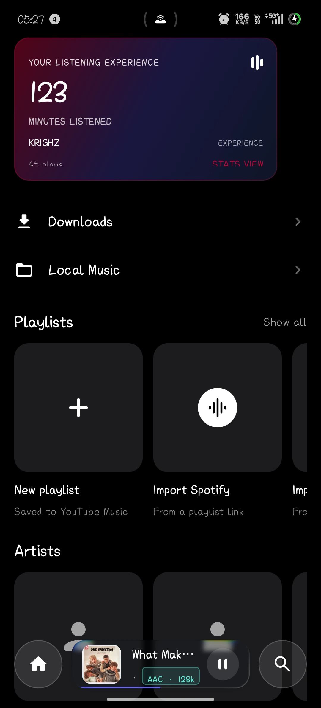
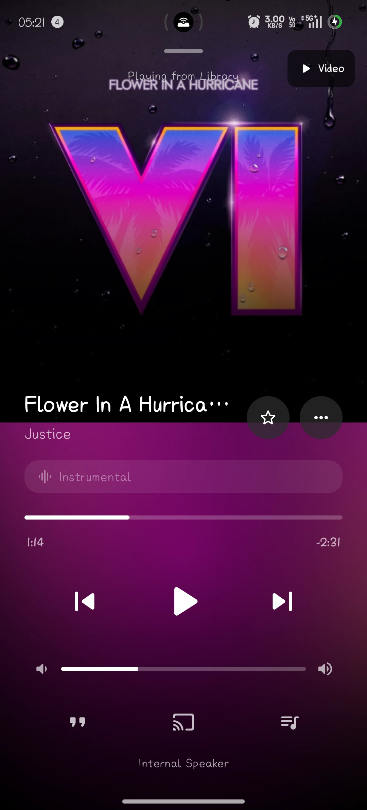

The hybrid YouTube Music & bit-perfect 32-bit local audio player built with Compose Multiplatform for Android and Windows Desktop. Engineered with custom 120 Hz AGSL liquid shaders, 5-provider synced karaoke, and zero telemetry.

A seamless blend of studio-grade signal processing and cutting-edge visual craft.
Sub-pixel 120 FPS syllable sweep powered by BiniLyrics, BetterLyrics, LyricsPlus, LrcLib, KuGou, and TTML. Features active-word glow, smooth autoscroll, and non-blocking cascading fallback.

Select up to 6 lines to generate beautiful shareable lyric cards with artwork-derived gradients, squircle disc marks, and instant Instagram Stories or Gallery export.

Autonomous background caching over Wi-Fi balancing 60% fresh recommendations and 40% heavy rotation. Two-tier LRU eviction keeps your favorite music ready without network latency.
Immersive 380dp edge-to-edge artist portraits, Shuffle/Play/Follow trio, Latest Release card, 4-row Top Songs, and 7 categorized shelves with dedicated discography sheets.

Navigate songs structurally with one-tap Intro, Verse, Chorus, Drop, Bridge, and Solo pills floating directly above the timeline scrubber.
10-band biquad parametric EQ with built-in Harman IEM profiles (Sony, Sennheiser, Moondrop, Tangzu, 7Hz, AirPods Pro 2) and acoustic-power normalized DJ Blend continuous crossfading.

Zero-config Wi-Fi 16-bit 48kHz PCM casting, stateful playback handoff, and encrypted mutual-TLS QR pairing between Windows PC and Android phones.
Leaf-level state tickers, Room compound index queries under 15ms, and custom hardware AGSL liquid glass shaders with Safe Graphics automated diagnostics.
Captured live on connected Android hardware over ADB.

100% free, open-source, and zero tracking. Release v2.2.0.
Signed with the official Node Player release key. Includes 120 Hz refresh rate lock, AGSL hardware shaders, and offline media store integration.
Standalone portable desktop application with bit-perfect WASAPI audio output, expanding liquid glass dock, hotkey matrix, and local SQLite library.